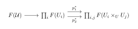
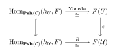

Topology and Sheaves of Grothendieck
Grothendieck Topology
Grothendieck Topology
Grothendieck Topology and Sieves
Remark 1.1 (Open Skeletons and Grothendieck Topologies). By taking the complement of the topological skeletons F_d(X) = X_{\le d}, we obtain a descending filtration of open subschemes: X = U^{(-1)} \supset U^{(0)} \supset U^{(1)} \supset \cdots \supset U^{(n)} = \emptyset, where U^{(d)} := X \setminus X_{\le d} is the open space obtained by "punching out" all points of dimension d and lower.
This naturally defines a filtration of subcategories within the category of open subschemes. To formalize how these varying open spaces can interact, pull back along morphisms, and "cover" our variety, Grothendieck realized we must abstract the notion of a topology itself. Intersection of open sets is generalized to the fiber product of schemes, and open inclusions are generalized to arbitrary covering morphisms.
In conventional topology, a topology is defined by specifying a collection of subsets called open sets. Grothendieck realized that one does not actually need a primitive notion of open sets; it suffices to fix the data of coverings and how these coverings interact with one another. This constitutes the core idea of Grothendieck pretopologies.
Definition 1.1 (Grothendieck Pretopology on Schemes). Let \mathsf{Sch}_{/k} be the category of schemes over a field k. A Grothendieck pretopology \mathcal{P} on \mathsf{Sch}_{/k} is given by assigning to each scheme U \in \mathsf{Sch}_{/k} a collection of families of morphisms \mathcal{U} = \{ \phi_i: U_i \to U \}_{i \in I}, called coverings of U, satisfying the following three axioms:
(Isomorphisms): If \phi: V \to U is an isomorphism in \mathsf{Sch}_{/k}, then the single-element family \{ V \xrightarrow{\phi} U \} is a covering.
(Base Change / Stability): If \mathcal{U} = \{ U_i \to U \}_{i \in I} is a covering of U, and V \to U is any morphism in \mathsf{Sch}_{/k}, then the fiber products U_i \times_U V exist in \mathsf{Sch}_{/k}, and the family of projection maps \{ U_i \times_U V \to V \}_{i \in I} is a covering of V.
(Composition / Transitivity): If \mathcal{U} = \{ U_i \to U \}_{i \in I} is a covering of U, and for each index i \in I, there is a covering \mathcal{V}_i = \{ V_{i,j} \to U_i \}_{j \in J_i} of U_i, then the composite family \{ V_{i,j} \to U_i \to U \}_{i \in I, j \in J_i} is a covering of U.
A category equipped with a Grothendieck pretopology is called a site.
The most standard example of a site is the Zariski site, namely the category of schemes equipped with the Zariski topology.
Example 1.1 (The Zariski Site). The classical Zariski topology on a scheme can be recast exactly in this categorical language. We define the Zariski pretopology on \mathsf{Sch}_{/k} by declaring that a family of morphisms \{ \phi_i: U_i \to U \}_{i \in I} is a Zariski covering if and only if:
Each \phi_i: U_i \to U is an open immersion.
The family is jointly surjective, meaning \bigcup_{i \in I} \phi_i(U_i) = U as topological spaces.
It is straightforward to verify the axioms: an isomorphism is trivially an open immersion; the fiber product of an open immersion U_i \hookrightarrow U with any map V \to U is just the topological preimage \phi^{-1}(U_i) in V mapping via an open immersion to V; and the composition of open immersions is an open immersion.
As in point-set topology, we also have the notion of refinement for pretopologies. It is necessary to clarify a longstanding source of confusion common to general topology and functional analysis regarding the meaning of "finer" topologies. One viewpoint holds that a finer topology distinguishes more points, making the discrete topology the finest topology. Another perspective argues that a finer topology imposes stricter continuity conditions on functions defined over the space, which treats the trivial topology as the finest. We adopt the latter intuition throughout this text.
Definition 1.2 (Refinement of Coverings). Let \mathcal{C} be a category and \mathcal{U} = \{U_i \to U\}_{i \in I} a set of arrows over an object U. A refinement of \mathcal{U} is defined to be a set of arrows \mathcal{V} = \{V_j \to U\}_{j \in J} such that for each j \in J, there exists an i \in I such that the morphism V_j \to U factorizes through U_i \to U (i.e., there exists V_j \to U_i making the triangle commute).
The relation "\mathcal{V} is a refinement of \mathcal{U}" is clearly a pre-order on the families of maps over U: it is reflexive (\mathcal{U} trivially refines itself via identity maps) and transitive.
Definition 1.3 (Equivalence of Pretopologies). Given a category \mathcal{C} and two Grothendieck pretopologies \mathcal{P}_1 and \mathcal{P}_2 on it, we write \mathcal{P}_1 \le \mathcal{P}_2 (and say \mathcal{P}_1 is subordinate to \mathcal{P}_2) if any covering in \mathcal{P}_1 has a refinement which is also a covering in \mathcal{P}_2.
If \mathcal{P}_1 \le \mathcal{P}_2 and \mathcal{P}_2 \le \mathcal{P}_1, we say that the two pretopologies are equivalent and write \mathcal{P}_1 \equiv \mathcal{P}_2. This defines a genuine equivalence relation on the collection of pretopologies on \mathcal{C}.
With the concept of refinement established, we may iteratively refine a given pretopology, and this process eventually stabilizes at a canonical pretopology known as its saturated pretopology.
Definition 1.4 (Saturated Pretopology). A pretopology \mathcal{P} on \mathcal{C} is saturated if any set of arrows \mathcal{U} = \{U_i \to U\} having a refinement in \mathcal{P} is itself a covering in \mathcal{P}.
For any pretopology \mathcal{P}, we define its saturation, denoted by \overline{\mathcal{P}}, as the collection of all sets of arrows that possess a refinement in \mathcal{P}.
Proposition 1.1 (Properties of the Saturation). Let \mathcal{P} be a pretopology on \mathcal{C}. The following properties hold:
The saturation \overline{\mathcal{P}} is a saturated pretopology;
\mathcal{P} \subseteq \overline{\mathcal{P}};
\mathcal{P} \equiv \overline{\mathcal{P}};
\mathcal{P} is saturated if and only if \mathcal{P} = \overline{\mathcal{P}};
Given another pretopology \mathcal{P}' on \mathcal{C}, then \mathcal{P}' \le \mathcal{P} \iff \overline{\mathcal{P}'} \le \overline{\mathcal{P}} (and similarly \mathcal{P}' \equiv \mathcal{P} \iff \overline{\mathcal{P}'} \equiv \overline{\mathcal{P}});
A pretopology on \mathcal{C} is equivalent to exactly one saturated pretopology.
Proof. (1) We first verify that \overline{\mathcal{P}} satisfies the three axioms of a pretopology.
PG1: If V \to U is an isomorphism, \{V \to U\} \in \mathcal{P} (since \mathcal{P} is a pretopology), and since it refines itself, it is in \overline{\mathcal{P}}.
PG2: Let \mathcal{U} = \{U_i \to U\} \in \overline{\mathcal{P}} and W \to U be any morphism. By definition, \mathcal{U} has a refinement \mathcal{V} = \{V_j \to U\} \in \mathcal{P}. Thus, V_j \to U factors through some U_{i(j)} \to U. By PG2 for \mathcal{P}, the pullback \mathcal{V} \times_U W = \{V_j \times_U W \to W\} is in \mathcal{P}. Because factorizations are preserved under pullback, V_j \times_U W \to W factors through U_{i(j)} \times_U W \to W. Hence, \mathcal{V} \times_U W \in \mathcal{P} refines \mathcal{U} \times_U W, which means \mathcal{U} \times_U W \in \overline{\mathcal{P}}.
PG3: If \mathcal{U} \in \overline{\mathcal{P}} and we have covers \mathcal{W}_i \to U_i in \overline{\mathcal{P}}, transitivity of refinements allows us to pull back a refinement of \mathcal{U} in \mathcal{P} and compose it with refinements of \mathcal{W}_i in \mathcal{P}. Axiom PG3 for \mathcal{P} guarantees the composite of these refinements is in \mathcal{P}, which naturally refines the composite of the original families. Thus, \overline{\mathcal{P}} is a pretopology.
To see \overline{\mathcal{P}} is saturated, let \mathcal{W} have a refinement \mathcal{U} \in \overline{\mathcal{P}}. By definition, \mathcal{U} has a refinement \mathcal{V} \in \mathcal{P}. By transitivity, \mathcal{V} refines \mathcal{W}, so \mathcal{W} \in \overline{\mathcal{P}}.
(2) Trivial. Any covering \mathcal{U} \in \mathcal{P} refines itself, hence \mathcal{U} \in \overline{\mathcal{P}}.
(3) By (2), \mathcal{P} \subseteq \overline{\mathcal{P}}, which immediately implies \mathcal{P} \le \overline{\mathcal{P}} (every cover in \mathcal{P} has a refinement in \overline{\mathcal{P}}, namely itself). Conversely, let \mathcal{U} \in \overline{\mathcal{P}}. By definition, \mathcal{U} has a refinement \mathcal{V} \in \mathcal{P}. This exactly means \overline{\mathcal{P}} \le \mathcal{P}. Therefore, \mathcal{P} \equiv \overline{\mathcal{P}}.
(4) (\Rightarrow) If \mathcal{P} is saturated, then any \mathcal{U} \in \overline{\mathcal{P}} has a refinement in \mathcal{P}, and thus must be in \mathcal{P} by the saturation property. So \overline{\mathcal{P}} \subseteq \mathcal{P}. With (2), \mathcal{P} = \overline{\mathcal{P}}. (\Leftarrow) If \mathcal{P} = \overline{\mathcal{P}}, then \mathcal{P} is saturated because \overline{\mathcal{P}} is saturated by (1).
(5) (\Rightarrow) Assume \mathcal{P}' \le \mathcal{P}. Let \mathcal{U} \in \overline{\mathcal{P}'}. It has a refinement \mathcal{V} \in \mathcal{P}'. Since \mathcal{P}' \le \mathcal{P}, \mathcal{V} has a refinement \mathcal{W} \in \mathcal{P} \subseteq \overline{\mathcal{P}}. By transitivity, \mathcal{W} refines \mathcal{U}, so \overline{\mathcal{P}'} \le \overline{\mathcal{P}}. (\Leftarrow) Assume \overline{\mathcal{P}'} \le \overline{\mathcal{P}}. Since \mathcal{P}' \subseteq \overline{\mathcal{P}'}, any \mathcal{U} \in \mathcal{P}' is in \overline{\mathcal{P}'}. Thus, it has a refinement \mathcal{V} \in \overline{\mathcal{P}}. But \mathcal{V} has a refinement \mathcal{W} \in \mathcal{P}. Transitivity implies \mathcal{W} refines \mathcal{U}, meaning \mathcal{P}' \le \mathcal{P}. The equivalence case follows immediately by applying this in both directions.
(6) Let \mathcal{P} be an arbitrary pretopology. By (1) and (3), \overline{\mathcal{P}} is a saturated pretopology equivalent to \mathcal{P}. To show uniqueness, suppose \mathcal{S} is another saturated pretopology such that \mathcal{S} \equiv \mathcal{P}. By (5), \mathcal{S} \equiv \mathcal{P} implies \overline{\mathcal{S}} \equiv \overline{\mathcal{P}}. Since \mathcal{S} is saturated, (4) yields \mathcal{S} = \overline{\mathcal{S}}, so \mathcal{S} \equiv \overline{\mathcal{P}}. Notice that for any two saturated pretopologies \mathcal{A} and \mathcal{B}, if \mathcal{A} \le \mathcal{B}, every cover in \mathcal{A} has a refinement in \mathcal{B}, and since \mathcal{B} is saturated, the cover itself must be in \mathcal{B} (i.e., \mathcal{A} \subseteq \mathcal{B}). Applying this to \mathcal{S} \equiv \overline{\mathcal{P}} gives \mathcal{S} \subseteq \overline{\mathcal{P}} and \overline{\mathcal{P}} \subseteq \mathcal{S}. Thus, \mathcal{S} = \overline{\mathcal{P}}, proving uniqueness. ◻
Remark 1.1 (From Pretopologies to Sieves). While a pretopology relies on specific families of morphisms \{U_i \to U\} to act as coverings, this approach is highly sensitive to the choice of the family. To abstract the topological essence, Grothendieck introduced the notion of a sieve.
A sieve acts as a "filter" that catches all morphisms factoring through a covering. By shifting the definition of a topology from "families of morphisms" to "sieves of morphisms," we automatically saturate our coverings and eliminate the need to constantly verify equivalence relations between different refinements.
After introducing Grothendieck pretopologies, we possess an alternative formalism for defining generalized topological spaces, which we term Grothendieck topologies to distinguish them from pretopologies. Though the two notions differ only by the prefix "pre-", we will later see that they mutually determine one another and stand in bijective correspondence.
The conceptual framework of Grothendieck topologies is somewhat more involved than that of pretopologies. Roughly speaking, instead of specifying which families of morphisms can cover an ambient object, we prescribe admissible families of covering morphisms for every object in the underlying category. Such a covering family attached to an object is called a sieve, and assigning a collection of admissible sieves to each object yields a Grothendieck topology.
Definition 1.5 (Sieve on a Scheme). Let \mathsf{Sch}_{/k} be the category of schemes over a field k. Given a scheme U \in \mathsf{Sch}_{/k}, a sieve S on U is defined as a subfunctor of the Yoneda functor h_U = \operatorname{Hom}_{\mathsf{Sch}_{/k}}(-, U).
Concretely, for any scheme W \in \mathsf{Sch}_{/k}, S(W) is a collection of morphisms W \to U such that it is closed under pre-composition: if f: W \to U \in S(W) and g: V \to W is any morphism of schemes, then the composition f \circ g \in S(V).
Given a specific covering family \mathcal{U} = \{U_i \to U\}_{i \in I}, we can define the sieve generated by \mathcal{U}, denoted h_{\mathcal{U}} \subseteq h_U, by defining h_{\mathcal{U}}(W) to be the set of all morphisms W \to U that factorize through U_i \to U for some U_i \in \mathcal{U}.
Likewise, we have the notion of refinement for sieves.
Proposition 1.1 (Refinement via Generated Sieves). Given two covering families \mathcal{U} and \mathcal{V} of a scheme U, \mathcal{V} is a refinement of \mathcal{U} if and only if there is an inclusion of their generated sieves: h_{\mathcal{V}} \subseteq h_{\mathcal{U}}.
Proof. Let \mathcal{U} = \{U_i \to U\}_{i \in I} and \mathcal{V} = \{V_j \to U\}_{j \in J} be two U-coverings. Recall that the sieve h_{\mathcal{U}} generated by \mathcal{U} consists of all morphisms f \to U that factor through some morphism U_i \to U in \mathcal{U}.
(\Longrightarrow) Assume \mathcal{V} is a refinement of \mathcal{U}. By definition of a refinement, for every morphism V_j \to U in \mathcal{V}, there exists some U_i \to U in \mathcal{U} such that V_j \to U factors through U_i \to U.
Now, let f: X \to U be an arbitrary element in h_{\mathcal{V}}. By definition of the generated sieve, f factors through some morphism V_j \to U in \mathcal{V}. Since V_j \to U further factors through some U_i \to U in \mathcal{U}, by transitivity of composition, f factors through U_i \to U. Therefore, f \in h_{\mathcal{U}}, which implies h_{\mathcal{V}} \subseteq h_{\mathcal{U}}.
(\Longleftarrow) Conversely, assume h_{\mathcal{V}} \subseteq h_{\mathcal{U}}. For each j \in J, the canonical morphism V_j \to U itself trivially factors through V_j \to U, so V_j \to U belongs to h_{\mathcal{V}}.
Since h_{\mathcal{V}} \subseteq h_{\mathcal{U}}, it follows that V_j \to U \in h_{\mathcal{U}} for every j \in J. By definition of h_{\mathcal{U}}, this means that each morphism V_j \to U must factor through some morphism U_i \to U in \mathcal{U}. This is precisely the definition of \mathcal{V} being a refinement of \mathcal{U}. ◻
This allows us to formulate Grothendieck topologies in terms of sieves. The definition of a Grothendieck topology may appear abstract at first glance, yet it becomes far more intuitive when viewed through the lens of point-set topology: we simply specify what constitutes a "reasonable" covering by assigning a collection of admissible coverings to every object.
Definition 1.6 (Grothendieck Topology (via Sieves)). A Grothendieck topology \mathcal{T} on \mathsf{Sch}_{/k} is given by assigning to each scheme U \in \mathsf{Sch}_{/k} a collection \mathcal{SC}ov_U of sieves on U, called covering sieves, which satisfy the following axioms:
(Maximality): The maximal sieve h_U belongs to \mathcal{SC}ov_U.
(Superset / Stability): If S_1 \subseteq S_2 are two sieves on U, and S_1 \in \mathcal{SC}ov_U, then S_2 \in \mathcal{SC}ov_U.
(Base Change): Given a morphism f: V \to U in \mathsf{Sch}_{/k} and a covering sieve S \in \mathcal{SC}ov_U, the pullback sieve S \times_U V is a covering sieve in \mathcal{SC}ov_V. The pullback sieve evaluated on W is explicitly given by: (S \times_U V)(W) = \{ \alpha: W \to V \mid f \circ \alpha \in S(W) \}.
(Local Character / Transitivity): If S_1 and S_2 are sieves on U with S_2 \in \mathcal{SC}ov_U, and if for every scheme V and every morphism f: V \to U \in S_2(V), the pullback sieve S_1 \times_U V \in \mathcal{SC}ov_V, then S_1 \in \mathcal{SC}ov_U.
We will next prove that axiom GT2 in the above list is UniBlueundant, as it can be deduced from GT3 and GT4.
Lemma 1.1 (Pullback of a Sieve by its Own Element). Let \mathcal{T} be a Grothendieck topology on \mathsf{Sch}_{/k}. Given S \in \mathcal{SC}ov_U and a morphism f: V \to U such that f \in S(V), then S \times_U V = h_V.
Proof. By the base change axiom GT3, we already know that S \times_U V \subseteq h_V is a sieve on V. To show equality, it suffices to prove that the identity morphism \operatorname{id}_V \in (S \times_U V)(V). Once \operatorname{id}_V is in the sieve, the right-absorbing property of sieves ensures that for any g: W \to V, g = \operatorname{id}_V \circ g will also be in the sieve, yielding the full representable functor h_V.
By the explicit definition of the pullback sieve: (S \times_U V)(V) = \{ \alpha: V \to V \mid f \circ \alpha \in S(V) \}. Setting \alpha = \operatorname{id}_V, we evaluate f \circ \operatorname{id}_V = f. By our hypothesis, f \in S(V). Therefore, \operatorname{id}_V \in (S \times_U V)(V), which immediately implies S \times_U V = h_V. ◻
Proposition 1.1 (Redundancy of the Superset Axiom). The axiom GT2 is formally UniBlueundant, as it descends from GT3 and GT4.
Proof. Let R, S be two sieves on U such that S \subseteq R and S \in \mathcal{SC}ov_U. We must prove that R \in \mathcal{SC}ov_U.
For each morphism f: V \to U \in S(V), the base change axiom GT3 dictates that S \times_U V \in \mathcal{SC}ov_V. By Lemma , since f \in S(V), we have S \times_U V = h_V.
Because S \subseteq R, the pullbacks preserve the inclusion: h_V = S \times_U V \subseteq R \times_U V \subseteq h_V. This forces R \times_U V = h_V. By GT1, h_V \in \mathcal{SC}ov_V, so R \times_U V \in \mathcal{SC}ov_V for every f \in S(V).
Applying the local character axiom GT4 (with S_2 = S and S_1 = R), we conclude that R \in \mathcal{SC}ov_U. ◻
We then establish a profound result: Grothendieck pretopologies and Grothendieck topologies are essentially equivalent. One can be constructed canonically from the other, and this correspondence is bijective in a suitable sense. Furthermore, attentive readers will immediately detect an analogy with the correspondences central to Galois theory in number theory, and this resemblance is no coincidence. In category theory, such a reciprocal relationship is known as a Galois connection.
Lemma 1.1 (Pullback of Generated Sieves). Let \mathcal{U} = \{U_i \to U\} be a covering family of U in \mathsf{Sch}_{/k}, and let f: V \to U be any morphism. Assuming the fiber products U_i \times_U V exist in \mathsf{Sch}_{/k}, we have the equality of generated sieves: h_{\mathcal{U}} \times_U V = h_{\mathcal{U} \times_U V}.
Proof. Using the definition of the fibeUniBlue product of sieves from GT3, we have for any scheme W: (h_{\mathcal{U}} \times_U V)(W) = \{ \alpha: W \to V \mid f \circ \alpha = \phi \in h_{\mathcal{U}}(W) \}. By definition of h_{\mathcal{U}}, the morphism \phi = f \circ \alpha: W \to U factorizes through some \beta_i: U_i \to U in \mathcal{U}. This gives us the following commutative diagram:
Because \mathsf{Sch}_{/k} admits fiber products, the commutativity of the outer square (f \circ \alpha = \beta_i \circ g) invokes the universal property of the pullback scheme V \times_U U_i. This guarantees the existence of a unique induced morphism W \dashrightarrow V \times_U U_i that makes the entire diagram commute:
This diagram demonstrates that \alpha: W \to V factorizes through the projection p_1: V \times_U U_i \to V. Since the family \{V \times_U U_i \to V\} is exactly \mathcal{U} \times_U V, this means \alpha \in h_{\mathcal{U} \times_U V}(W). Thus, h_{\mathcal{U}} \times_U V \subseteq h_{\mathcal{U} \times_U V}.
The converse inclusion is evident from reversing the diagrammatic logic: any map factoring through the fiber product naturally provides a commuting square, ensuring its composition with f factors through U_i. Hence, h_{\mathcal{U}} \times_U V = h_{\mathcal{U} \times_U V}. ◻
Theorem 1.1 (Correspondence between Pretopologies and Topologies). Let \mathsf{Sch}_{/k} be the category of schemes over k (which inherently admits fiber products). There is a fundamental correspondence between Grothendieck pretopologies and Grothendieck topologies on \mathsf{Sch}_{/k}, established by the following maps:
From Pretopology to Topology: Given a Grothendieck pretopology \mathcal{P}, we define a Grothendieck topology \mathcal{T}_{\mathcal{P}} by declaring the covering sieves on U to be: \mathcal{SC}ov_U := \{ S \subseteq h_U \mid \exists \mathcal{U} \text{ a } U\text{-covering in } \mathcal{P} \text{ such that } h_{\mathcal{U}} \subseteq S \}. Equivalent pretopologies (\mathcal{P}_1 \equiv \mathcal{P}_2) generate the exact same topology.
From Topology to Pretopology: Conversely, given a Grothendieck topology \mathcal{T}, we can associate to it a saturated Grothendieck pretopology \mathcal{P}_{\mathcal{T}} by declaring a family of morphisms \mathcal{U} = \{U_i \to U\} to be a covering if and only if its generated sieve is a covering sieve in \mathcal{T}: \mathcal{U} \in \mathcal{P}_{\mathcal{T}} \iff h_{\mathcal{U}} \in \mathcal{SC}ov_U \text{ (in } \mathcal{T}).
The Bijection: Applying these two mappings sequentially yields the following structural recovery:
Starting from a pretopology \mathcal{P}, the sequence \mathcal{P} \mapsto \mathcal{T}_{\mathcal{P}} \mapsto \mathcal{P}_{\mathcal{T}_{\mathcal{P}}} yields the saturation \overline{\mathcal{P}}.
Starting from a topology \mathcal{T}, the sequence \mathcal{T} \mapsto \mathcal{P}_{\mathcal{T}} \mapsto \mathcal{T}_{\mathcal{P}_{\mathcal{T}}} recovers exactly \mathcal{T}.
Consequently, there is a canonical bijection between the set of saturated Grothendieck pretopologies on \mathsf{Sch}_{/k} and the set of Grothendieck topologies on \mathsf{Sch}_{/k}.
Remark 1.1 (The Dictionary of Coverings). This theorem provides a powerful dictionary. Working with sieves (topologies) is logically pristine and avoids the messy equivalence relations of refinements. However, sieves are enormous, abstract entities, they contain every morphism that factors through a cover.
In practice, when we want to prove something (like descent of a property or computing cohomology), we cannot work with a sieve directly. Instead, we work with a pretopology, a specific, manageable family of maps \{U_i \to U\} (like a finite affine open cover).
The theorem guarantees that we lose no information by doing this. We can freely define our geometric concepts using manageable pretopologies, knowing that they rigorously generate a unique, well-behaved topological framework via sieves.
Example 1.1 (Recovering the Zariski Topology). Consider the Zariski topology on an algebraic variety X.
In the Pretopology perspective, a covering of an open set U \subseteq X is a specific collection of open immersions \{U_i \hookrightarrow U\} such that \bigcup U_i = U. This is the standard, intuitive definition.
If we pass to the Topology perspective using map (1), a covering sieve S \in \mathcal{SC}ov_U is any subfunctor of h_U that contains the sieve h_{\mathcal{U}} generated by some joint-surjective family of open immersions. This means S contains not only the open immersions U_i \hookrightarrow U, but also every composition V \to U_i \hookrightarrow U.
If we try to return to the pretopology using map (2), we look at all families \mathcal{W} = \{W_j \to U\} whose generated sieve h_{\mathcal{W}} is in \mathcal{SC}ov_U. This forces h_{\mathcal{W}} to contain some h_{\mathcal{U}} (where \mathcal{U} is a standard open cover). By Proposition 1.7, this means \mathcal{W} is a refinement of a standard open cover \mathcal{U}.
Therefore, the saturated pretopology \overline{\mathcal{P}_{\text{Zar}}} consists of all families of morphisms into U that factor through some jointly-surjective open cover. This includes not just open immersions, but completely bizarre maps, for instance, an infinite disjoint union of tiny affine opens mapping UniBlueundantly into U. The theorem tells us that while \overline{\mathcal{P}_{\text{Zar}}} is mathematically vast, it is topologically identical to the simple, minimal open covers we started with.
Sheaves on Grothendieck Topologies
Now that we have introduced this new generalized notion of topology, it is natural to define presheaves and sheaves over such structures. This perspective unlocks an extremely broad framework, yet unfortunately we will not make substantive use of it until much later in the text. Until we explicitly switch to Grothendieck’s sheaf-theoretic formalism, we shall exclusively work with presheaves and sheaves defined with respect to the classical Zariski topology.
Definition 1.7 (Presheaves and Sheaves on a Site). Let \mathcal{C} be a site (a category endowed with a Grothendieck pretopology, such as \mathsf{Sch}_{/k} with the Zariski or étale topology). A presheaf (of sets) on \mathcal{C} is a contravariant functor F: \mathcal{C}^{\mathrm{op}} \longrightarrow \mathsf{Set}.
We say that a presheaf F is a sheaf if it respects the following gluing conditions for any object U \in \mathcal{C} and any covering \mathcal{U} = \{U_i \xrightarrow{\alpha_i} U\}_{i \in I} in the pretopology:
If \mathcal{C} has an initial object \emptyset_\mathcal{C}, then F(\emptyset_\mathcal{C}) = \{\text{pt}\} is a singleton. (This means F preserves the terminal object in \mathcal{C}^{\mathrm{op}}).
(Separability): Given two sections s, t \in F(U), if their restrictions match on the cover, i.e., s|_{U_i} = t|_{U_i} for all i (where the restriction is defined by F(\alpha_i)), then s = t.
(Gluing): Given a family of sections \{s_i \in F(U_i)\} that agree on overlaps, meaning s_i|_{U_i \times_U U_j} = s_j|_{U_i \times_U U_j} for all i, j, there exists a (unique, by S1) section s \in F(U) such that s|_{U_i} = s_i for all i.
We denote the category of presheaves on \mathcal{C} by \mathbf{Psh}(\mathcal{C}) := \operatorname{Funct}(\mathcal{C}^{\mathrm{op}}, \mathsf{Set}), where morphisms are natural transformations. The full subcategory of sheaves is denoted by \mathsf{Sh}(\mathcal{C}). The category of sheaves on a site is often called a topos.
We may recapitulate the entire sequence of constructions originally used to define presheaves and sheaves, including the equivalent characterizations of sheaves.
Definition 1.8 (The Equalizer Definition of a
Sheaf). The conditions S1 and
S2 can be elegantly reformulated using
categorical limits. Given a covering \mathcal{U} = \{U_i \to U\} and a
presheaf F \in
\mathbf{Psh}(\mathcal{C}), we define F(\mathcal{U}) as the
equalizer of the following diagram in \mathsf{Set}:

Concretely, F(\mathcal{U}) is exactly the set of all "compatible families of local sections". The canonical restriction maps F(U) \to F(U_i) induce a natural map F(U) \longrightarrow F(\mathcal{U}).
Proposition 1.1 (Sheaf Condition via Equalizers). A presheaf F: \mathcal{C}^{\mathrm{op}} \longrightarrow \mathsf{Set} is a sheaf (for the Grothendieck pretopology \mathcal{P}) if and only if, for every covering \mathcal{U} = \{U_i \to U\}, the induced canonical map \psi: F(U) \longrightarrow F(\mathcal{U}) is an isomorphism (i.e., a bijection of sets).
Proof. Let us explicitly construct the induced map \psi: F(U) \to F(\mathcal{U}). For any global section s \in F(U), its restrictions s_i = s|_{U_i} \in F(U_i) naturally form a tuple (s_i)_{i \in I} \in \prod_i F(U_i). Because the restriction maps are strictly functorial, we have: p_1^*(s_i) = s|_{U_i \times_U U_j} = p_2^*(s_j). Thus, the tuple (s_i)_{i \in I} equalizes p_1^* and p_2^*, meaning it lands precisely inside the equalizer F(\mathcal{U}). This defines \psi(s) = (s|_{U_i})_{i \in I}.
(\Rightarrow) Assume F is a sheaf. Injectivity: Suppose \psi(s) = \psi(t) for two sections s, t \in F(U). This means s|_{U_i} = t|_{U_i} for all i. By the Separability axiom (S1), we must have s = t. Thus, \psi is injective. Surjectivity: Let (s_i)_{i \in I} \in F(\mathcal{U}) be an arbitrary element. By the definition of the equalizer, this is a family of sections such that s_i|_{U_i \times_U U_j} = s_j|_{U_i \times_U U_j} for all i, j. By the Gluing axiom (S2), there exists a section s \in F(U) such that s|_{U_i} = s_i for all i. This exactly means \psi(s) = (s_i)_{i \in I}. Thus, \psi is surjective. Being both injective and surjective, \psi is a bijection (isomorphism in \mathsf{Set}).
(\Leftarrow) Assume \psi: F(U) \to F(\mathcal{U}) is a bijection for every cover. If s|_{U_i} = t|_{U_i} for all i, then \psi(s) = \psi(t). Since \psi is a bijection, it is injective, so s = t. This proves S1. Given any compatible family \{s_i \in F(U_i)\} agreeing on overlaps, it defines an element in the equalizer F(\mathcal{U}). Since \psi is surjective, there is a preimage s \in F(U) such that \psi(s) = (s_i), meaning s|_{U_i} = s_i. This proves S2. Therefore, F is a sheaf. ◻
Furthermore, it is possible to generalize Yoneda’s lemma to arbitrary sites. The proof, however, is quite lengthy, so we omit it and invite readers to grasp the underlying intuition instead.
Theorem 1.1 (Generalized Yoneda Lemma for
Sites). Let \mathcal{C} be a
site, F \in
\mathbf{Psh}(\mathcal{C}) be a presheaf, and fix a covering
\mathcal{U} = \{U_i \to U\}. Then
there exists a canonical bijection in \mathsf{Set}: R:
\operatorname{Hom}_{\mathbf{Psh}(\mathcal{C})}(h_{\mathcal{U}}, F)
\stackrel{\cong}{\longrightarrow} F(\mathcal{U}). In
particular, we have the following commutative diagram linking the
standard Yoneda Lemma with this generalized version for sieves:

Corollary 1.1 (Sheaf Condition via Hom Sets). Let \mathcal{C} be a site. A presheaf F \in \mathbf{Psh}(\mathcal{C}) is a sheaf if and only if for each covering \mathcal{U} = \{U_i \to U\}, the induced map \operatorname{Hom}_{\mathbf{Psh}(\mathcal{C})}(h_U, F) \longrightarrow \operatorname{Hom}_{\mathbf{Psh}(\mathcal{C})}(h_{\mathcal{U}}, F) is bijective.
We next introduce an intermediate concept, strictly stronger than presheaves but weaker than sheaves, known as separated presheaves. This notion yields an additional equivalent characterization for a presheaf to be a sheaf.
Definition 1.9 (Separated Presheaves and Sheaves for a Topology). A presheaf F \in \mathbf{Psh}(\mathcal{C}) is a separated presheaf (i.e., satisfying the separability axiom S1) for the Grothendieck topology \mathcal{T} if for every object U \in \mathcal{C} and every covering sieve S \in \mathcal{SC}ov_U, the induced map \operatorname{Hom}_{\mathbf{Psh}(\mathcal{C})}(h_U, F) \longrightarrow \operatorname{Hom}_{\mathbf{Psh}(\mathcal{C})}(S, F) is injective.
F is a sheaf for the Grothendieck topology \mathcal{T} if and only if the above induced map is bijective.
Lemma 1.1 (Injectivity for Separated Presheaves). If F is a separated presheaf for the pretopology \mathcal{P}_{\mathcal{T}} (associated to the Grothendieck topology \mathcal{T}), and h_{\mathcal{U}} \subseteq S \subseteq h_U, then the induced map \operatorname{Hom}_{\mathbf{Psh}(\mathcal{C})}(S, F) \longrightarrow \operatorname{Hom}_{\mathbf{Psh}(\mathcal{C})}(h_{\mathcal{U}}, F) is injective.
Proof. Let us consider two natural transformations \Phi, \Psi: S \to F having the same image in \operatorname{Hom}_{\mathbf{Psh}(\mathcal{C})}(h_{\mathcal{U}}, F). Fix an arbitrary morphism T \to U \in S(T).
Let \mathcal{U} = \{U_i \to U\} and consider the fibeUniBlue products T \times_U U_i, with p_i being the projections onto T. The canonical map T \times_U U_i \to U is an element of h_{\mathcal{U}}(T \times_U U_i) since it factorizes as T \times_U U_i \xrightarrow{p_i} U_i \to U. By the naturality of \Phi and \Psi, we have: F(p_i)\Phi(T \to U) = \Phi(T \times_U U_i \to U) = \Psi(T \times_U U_i \to U) = F(p_i)\Psi(T \to U). Since the family \{p_i: T \times_U U_i \to T\}_i is a T-covering by the base change axiom PG2, and F is a separated presheaf, the agreement of the restrictions implies that the global sections must be equal: \Phi(T \to U) = \Psi(T \to U). Because this holds for all T and all morphisms in S(T), we conclude that \Phi = \Psi, and hence the map is injective. ◻
Proposition 1.1 (Equivalence of Sheaf Definitions). A functor F: \mathcal{C}^{\mathrm{op}} \to \mathsf{Set} is a sheaf for the topology \mathcal{T} if and only if F is a sheaf for the associated pretopology \mathcal{P}_{\mathcal{T}}.
Proof. Suppose F is a sheaf for the topology \mathcal{T}. By definition, \operatorname{Hom}(h_U, F) \cong \operatorname{Hom}(S, F) for each covering sieve S \in \mathcal{SC}ov_U. Considering specifically the generated sieves of the form h_{\mathcal{U}} \in \mathcal{SC}ov_U, we can immediately conclude that F is a sheaf for \mathcal{P}_{\mathcal{T}} using Corollary .
Suppose instead F is a sheaf for the pretopology \mathcal{P}_{\mathcal{T}}. Fix a covering sieve S \in \mathcal{SC}ov_U and choose a U-covering \mathcal{U} in \mathcal{P}_{\mathcal{T}} such that h_{\mathcal{U}} \subseteq S \subseteq h_U. We can consider the composition: \operatorname{Hom}(h_U, F) \longrightarrow \operatorname{Hom}(S, F) \longrightarrow \operatorname{Hom}(h_{\mathcal{U}}, F). The total composition is a bijection (by functoriality) due to Corollary (since F is a sheaf for \mathcal{P}_{\mathcal{T}}). Using Lemma , we know that the second map \operatorname{Hom}(S, F) \to \operatorname{Hom}(h_{\mathcal{U}}, F) is injective. Since the composition is bijective and the second map is injective, the first map \operatorname{Hom}(h_U, F) \to \operatorname{Hom}(S, F) must also be surjective, forcing it to be a bijection. Hence, F is a sheaf for the topology \mathcal{T}. ◻
Proposition 1.1 (Equivalent Pretopologies Yield Identical Sheaves). Given two Grothendieck pretopologies \mathcal{P}_1, \mathcal{P}_2 on \mathcal{C}, if \mathcal{P}_1 \le \mathcal{P}_2, then every sheaf for \mathcal{P}_2 is also a sheaf for \mathcal{P}_1. In particular, equivalent pretopologies have exactly the same category of sheaves.
We conclude this section by defining the canonical topology, which is the finest Grothendieck topology for which all representable functors are sheaves. The subsequent proposition provides an explicit constructive definition of this topology, though its proof is again highly involved.
Theorem 1.1 (Existence of the Sheafification Functor). Let \mathcal{C} be a category endowed with a Grothendieck topology \mathcal{T}. There exists a canonical functor, the sheafification functor: \mathcal{F}: \mathbf{Psh}(\mathcal{C}) \longrightarrow \mathsf{Sh}(\mathcal{C}), \quad F \longmapsto (F^+)^+ which is the left adjoint to the forgetful inclusion functor \iota: \mathsf{Sh}(\mathcal{C}) \hookrightarrow \mathbf{Psh}(\mathcal{C}).
This means it sends every presheaf F to a sheaf \mathcal{F}(F), such that for any morphism of presheaves \phi: F \to G where G is a sheaf, there exists a unique morphism of sheaves \psi: \mathcal{F}(F) \to G making the following diagram commutative:
Construction Sketch: The idea is that given a presheaf F, we can build a separated presheaf F^+, and repeating the construction again yields (F^+)^+, which will be a fully-fledged sheaf. The functor ^+: \mathbf{Psh}(\mathcal{C}) \to \mathbf{Psh}(\mathcal{C}) is defined by setting: F^+(U) = \varinjlim_{S \in \mathcal{SC}ov_U} \operatorname{Hom}_{\mathbf{Psh}(\mathcal{C})}(S, F). Thus, an element of F^+(U) is an equivalence class of natural transformations, where two natural transformations \tau: S \to F and \rho: R \to F (with S, R \in \mathcal{SC}ov_U) are consideUniBlue equivalent if there exists a smaller covering sieve T \subseteq S \cap R such that their restrictions agree: \tau|_T = \rho|_T.
Remark 1.1 (Reversing the Perspective). Until now, we have fixed a topology \mathcal{T} and asked whether a given presheaf F satisfies the descent (sheaf) conditions. Now, we reverse the perspective: given a family of presheaves, what is the "best" topology we can equip our category with such that these presheaves are actually sheaves? Specifically, we want the finest topology among all such possibilities.
Definition 1.10 (Finer and Coarser Topologies). Let \mathcal{T}_1 and \mathcal{T}_2 be two Grothendieck topologies on a category \mathcal{C}. We say that \mathcal{T}_1 is finer than \mathcal{T}_2 (or equivalently, \mathcal{T}_2 is coarser than \mathcal{T}_1) if every covering sieve in \mathcal{T}_2 is also a covering sieve in \mathcal{T}_1.
In symbols, for every object U \in \mathcal{C}, we have the inclusion: \mathcal{SC}ov_U(\mathcal{T}_2) \subseteq \mathcal{SC}ov_U(\mathcal{T}_1). (Geometrically, a finer topology has "more" coverings, meaning it imposes strictly more gluing conditions on presheaves. Thus, it is "harder" to be a sheaf in a finer topology.)
Proposition 1.1 (The Finest Topology for a Family of Presheaves). Let \mathcal{C} be a category, and let \mathcal{F} = \{F_i: \mathcal{C}^{\mathrm{op}} \to \mathsf{Set}\}_{i \in I} be a family of presheaves such that, if the initial object \emptyset_{\mathcal{C}} exists in \mathcal{C}, then F_i(\emptyset_{\mathcal{C}}) = \{\text{pt}\} for all i \in I.
For every object U \in \mathcal{C}, define \mathcal{F}\mathcal{SC}ov_U to be the family of all sieves S \subseteq h_U that satisfy the following property: for any morphism f: V \to U and for all i \in I, the natural map induced by the sieve inclusion S \times_U V \hookrightarrow h_V, \operatorname{Hom}_{\mathbf{Psh}(\mathcal{C})}(h_V, F_i) \stackrel{\sim}{\longrightarrow} \operatorname{Hom}_{\mathbf{Psh}(\mathcal{C})}(S \times_U V, F_i) is a bijection. Then the following profound facts hold:
The datum \{\mathcal{F}\mathcal{SC}ov_U\}_{U \in \operatorname{Ob}(\mathcal{C})} forms a valid Grothendieck topology \mathcal{T}_{\mathcal{F}} on \mathcal{C}.
All the presheaves F_i in the family \mathcal{F} are sheaves for this topology \mathcal{T}_{\mathcal{F}}.
\mathcal{T}_{\mathcal{F}} is the finest topology on \mathcal{C} such that all the F_i’s are sheaves.
Remark 1.1 (Omission of Proof). The proof of Proposition 3.2 is a lengthy, brute-force verification of the Grothendieck topology axioms (GT1 through GT4) for the constructed sieves. While algebraically rigorous, it offers little geometric insight and is thus omitted here. The reader should focus on the existence and universal property (finest nature) of \mathcal{T}_{\mathcal{F}}.
Definition 1.11 (The Canonical Topology). Let \mathcal{C} be a category. The canonical topology on \mathcal{C} is the finest Grothendieck topology such that all representable functors are sheaves.
Using the machinery of the previous proposition, it is exactly the topology \mathcal{T}_{\mathcal{F}} generated by setting the family of presheaves to be \mathcal{F} = \{h_U\}_{U \in \mathcal{C}}.
Remark 1.1 (Significance of the Canonical Topology). The canonical topology serves as the absolute "speed limit" for geometric topologies. When we study schemes, representable functors h_U = \operatorname{Hom}(-, U) represent the fundamental building blocks (the schemes themselves acting as test objects). For geometry to make sense, a scheme U must behave locally like a sheaf, if we specify morphisms into U on a cover that agree on overlaps, they must glue into a unique global morphism into U.
Therefore, any Grothendieck topology we invent for geometric purposes (like the Zariski, étale, fppf, or fpqc topologies) must be coarser than or equal to the canonical topology. If a topology is strictly finer than the canonical topology, our representable functors would fail to be sheaves, breaking Yoneda’s Lemma for sheaves and destroying the basic fabric of scheme theory.